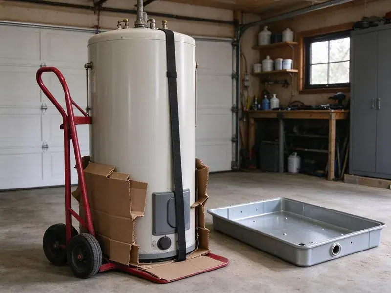
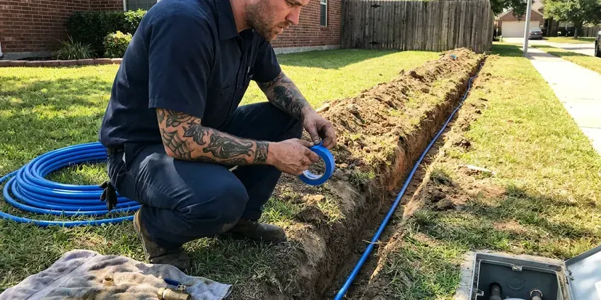
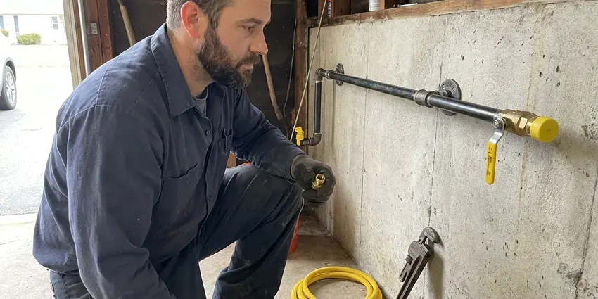
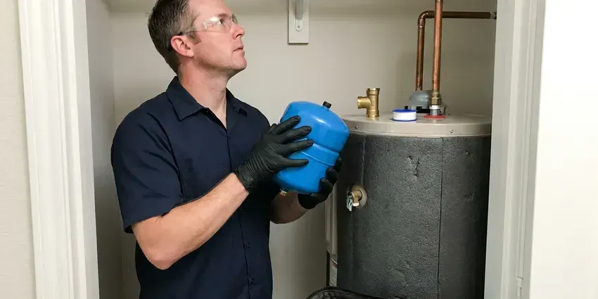

Basement Sump Pump Installation in Mentor, OH
From a fresh liner to a cast iron pump with a battery backup, HRL Plumbing builds sump systems in Mentor, OH that keep going through an outage.
- Water-Tested Before We Leave
- Local Mentor Crews
- Licensed Plumbers
- Licensed and Insured

Need a Sump Pump Installed in Mentor, OH?
Call HRL Plumbing for a free estimate before the rainy season starts.
Sump Pump Installation for Mentor, OH Homes With Lower Levels
HRL Plumbing works in walkout basements and below-grade mechanical rooms all over Mentor. If the old pit is too small we enlarge it, and if there is none we cut one, set a sealed liner with a gasketed lid, and pick a pump by measuring the vertical lift to the discharge point. After that, the hose goes in the pit. The pump has to clear the pit twice before we call it done.
Work we handle every week:
- Pump sizing by inflow rate and vertical lift
- High-capacity pumps for high water tables
- Slab saw cutting and pit excavation through hardpan and clay

Additional Plumbing Installation Services in Mentor, OH
We install water heaters, pumps, lines, and fixtures across Mentor, OH with careful, permitted work that passes inspection the first time.




Professional water line installation, Mentor


Mentor gas line installation specialists

Customers
Why Choose HRL Plumbing for Basement Sump Pump Installation in Mentor, OH?
Basements in Mentor come in every style. Poured walls leak at tie holes, while block and fieldstone seep almost everywhere, so we look at how water enters before we decide where the pit goes and whether drain tile should feed it. That changes the plan.
- Backup Ready, Battery backups keep pumping through a power outage.
- Drier Air, A dry basement grows less mold and mildew, and the whole house smells better for it.
- Flood Prevention, A pump that starts on time stops water before it reaches the carpet.
Citywide Coverage
Across all of Mentor, response time is usually same day or next day. Older homes with partial cellars are common jobs for us, and so are newer custom builds where the basement was finished before anyone thought about a pump. Both get a water test.
Experienced Team
The team installs primary pumps, backups and alarms on a weekly basis. You get the options explained in plain terms, and before they leave they show you how to pour a bucket of water into the pit to test the pump, which you should do every few months. It takes two minutes.
Safety-First Approach
Before we leave a Mentor home, the system gets a full test. The hose runs until the float starts the pump, then we watch it empty to the shutoff point, check the check valve for leaks, and confirm the alarm sounds at the right level. Then we test it again.
Trusted Certified Mentor Plumbing Services Professionals
At HRL Plumbing, we take pride in licensed, certified plumbing services throughout Mentor, OH. Those papers on the wall mean something. Every repair, install and maintenance visit follows strict safety and quality rules, and the plumbers doing the work carry recognized industry credentials.
Call Us Now PHCC Plumbing Contractor Recognition
PHCC Plumbing Contractor Recognition Better Business Bureau (BBB) Accreditation
Better Business Bureau (BBB) Accreditation Angi Certified Pro
Angi Certified Pro ISO 9001 Quality Management Certification
ISO 9001 Quality Management CertificationThe Sump Pump Work We Do in Mentor, OH
Battery Backup Sump Pump Installation in Mentor, OH
Battery backups earn their keep during outages. Older cities with combined sewers can back up during big storms, so a backwater valve can safeguard a finished basement. A second pump goes into the same pit on its own float switch, wired to a sealed AGM battery on a smart charger that tests itself and beeps when the battery gets weak. The main pump keeps doing the daily work.

Quiet Submersible Pumps for Finished Basements in Mentor
Finished basements call for a quiet pump and a sealed lid. Pairing a submersible with a gasketed cover cuts noise and odor, and we route the discharge behind framing or through a closet so the pipe does not run across a wall you just painted in your Mentor home. We patch the slab flush.
Battery Backup Sump Pump Systems in Mentor
Outages and heavy rain tend to show up together. Without house power, a battery backup keeps a second pump going, and a fully charged 75 amp-hour battery can run a typical backup pump for several hours of on-and-off cycling, longer on a light night. We load test the battery.
Pedestal Sump Pump Installation in Mentor
Pedestal pumps put the motor on a column above the water. That keeps it dry and easy to reach, which is why they suit narrow pits under 14 inches across, and why they often outlast cheap submersibles in Mentor homes. Expect more noise.
Wayne Sump Pump Installation in Mentor, OH
Wayne builds everything from basic utility pumps to combo units with a built-in backup. We help you pick the model that fits your pit, then install it with a proper check valve and a dedicated outlet so it runs the way Wayne rated it in your Mentor, OH basement. Some models include Wi-Fi alerts.
New Sump Pit Excavation in Mentor
No pit yet? We find the low spot where water collects, saw cut the slab, dig roughly 24 to 30 inches deep, and set a liner surrounded by washed gravel so water can enter while fine soil stays out. We pour new concrete flush with the floor.
Commercial and Multi-Unit Sump Installations in Mentor
Duplex systems with two pumps and an alternating panel are standard for parking garages and multi-unit buildings with below-grade levels in Mentor. Each cycle, the panel switches which pump leads, so wear stays even. A high water alarm alerts building staff. We coordinate the wiring with your electrician.

Same-Day Sump Pump Installation in Mentor
Same-day emergency installs cover pumps that quit in the middle of a storm. We remove standing water from the pit first, then set a new pump on a new check valve, plug it into a tested GFCI outlet and watch it run through several cycles before leaving your Mentor basement. A backup is the next conversation.
Basement Sump Pump Installation Near Me in Mentor, OH
Typing sump pump installation near me into a phone in Mentor, OH gets you a long list. Ask each company if they measure vertical lift, whether they install a check valve, and whether the discharge will end at least 10 feet from your foundation. Our answer is yes to each.
Spotted water on the basement floor and searched for help nearby? Call before the next storm comes through, because a pit that is already full has nowhere to put the next inch of rain, and the water finds the lowest finished room in the house. We keep pumps stocked.
HRL Plumbing at a Glance
- Fully licensed plumbing team covering Mentor, OH
- 24/7 emergency service with same-day scheduling
- Clear written estimates, no hidden fees
- 4.9-star rated by 673+ Ohio customers
Mentor Map
Mentor Information
- Population
- 46,929
- Area codes
- 440/216/330
- Service area
- Mentor and communities within 40 miles
- Nearby
- Euclid, Cleveland, Lakewood, Parma
A basement sits below the water table on wet days, and in Mentor, OH the sump pit is where that water gets collected and pumped back outside.
Expert Services
Reach out to HRL Plumbing for honest, reliable plumbing from people who know the trade in Mentor, OH.
Our Specialized Plumbing Services in Mentor, OH
At HRL Plumbing, we handle the full list of plumbing services across Mentor, OH. From leak detection to full system installs, our team works fast and charges fair prices on homes and commercial properties alike. Take a look at our core services below:


What a Sump Pump Install Looks Like in Mentor, OH
Here is how a sump pump install goes, from the first call to the water test.
Request a Quote
Call (740) 449-7505 or use the online form and tell us where the water shows up. We set a time for a plumber to come look at the basement.
On-Site Assessment
A licensed plumber visits your Mentor home, finds the low point and checks how water gets in, then recommends a pit location and a pump type.
Professional Installation
We cut the slab if needed, set the basin, install the pump and run the discharge to meet local Ohio codes. Every pump gets its own GFCI-protected outlet.
Frequently Asked Questions About Basement Sump Pump Installation in Mentor
Prices in Mentor, OH usually land between $800 and $2,500. A pedestal unit runs cheaper than a cast iron submersible, and the biggest swing comes from whether we have to excavate a new pit and whether you want a battery backup added to the same basin. Every quote is itemized.
Most standard installs finish within 4 to 8 hours. Long discharge runs or a new pit can add several hours, and if we need a new circuit from the panel, an electrician may need to come out the same day, which can push the job into the evening. We give a timeline at the visit.
A primary pump does the everyday work. The secondary, usually battery powered, sits beside it as a backup, and it kicks on if the primary fails, loses power, or gets overwhelmed by more water than it can move during a heavy storm. Two pumps, two check valves.
Once a year is enough for most pumps, ideally before the wet season. A tune-up covers the float, the pit, the check valve and the discharge, and we confirm the discharge outlet outside is open, since a clogged outlet makes the pump run hard against a blocked line. The visit is short.
Changing out a pump in an existing pit takes about two to three hours. A new pit with slab cutting and a concrete patch takes most of a day, since the concrete needs a little time to firm up before the pump goes into service.
Lead service lines remain in some older neighborhoods, and replacing them is a frequent recommendation during larger projects. Slab homes without a basement rarely need a pump. Basements and below-grade rooms are a different case, since they can take on water fast during heavy storms, especially where the ground sheds rain rather than soaking it up. A cleanup costs more than a pit.
Liberty Pumps, Zoeller and Wayne are our regulars. Each offers cast iron housings and dependable switches, and all three have solid parts support through local supply houses, which matters more than a fancy feature list when something breaks. We match the model to your pit.
Plan on 4 to 8 hours for a standard install. A new pit with slab cutting can stretch it to a full day, and tricky electrical access or a long discharge run through a finished wall adds time on top of that. You get a time estimate first.
What Our Customers Say About Our Plumbing Experts

Monica A.
Our water bill nearly doubled in one month with no change in how we used water. The tech checked the meter, heard the leak under the hallway with his equipment, and opened a hole about a foot square. Fixed the same day.
Slab Leak Repair · Cuyahoga Falls, OHLaura S.
Our 40 gallon tank started leaking from the bottom after thirteen years. The tech hauled the old one out, set a new unit with a fresh expansion tank, and had hot water running in about four hours. He took the old tank with him too.
Water Heater Replacement · Euclid, OH
Robert G.
The camera showed a full break in our clay sewer line near the street. HRL Plumbing replaced it with a trenchless pipe burst, so the only digging was two small pits in the yard. They let us watch the footage before and after.
Sewer Line Replacement · Cleveland, OH
Nathan E.
Our tankless heater kept throwing an error code and shutting off mid shower. The tech flushed the heat exchanger, which was full of scale, and replaced a bad flow sensor. Hot water has been steady for half a year now.
Water Heater Repair · Parma, OH
Brian W.
I smelled gas behind the dryer and called right away. The plumber found a corroded flex connector, replaced it, and pressure tested the whole line before turning the gas back on. He let me watch the gauge hold steady for fifteen minutes.
Gas Line Repair · Parma, OHKevin O.
Before buying our house I paid for a sewer camera inspection. HRL Plumbing found a belly in the line that held standing water about forty feet from the cleanout. We used the video to get the sellers to fix it before closing.
Sewer Camera Inspection · Mentor, OH